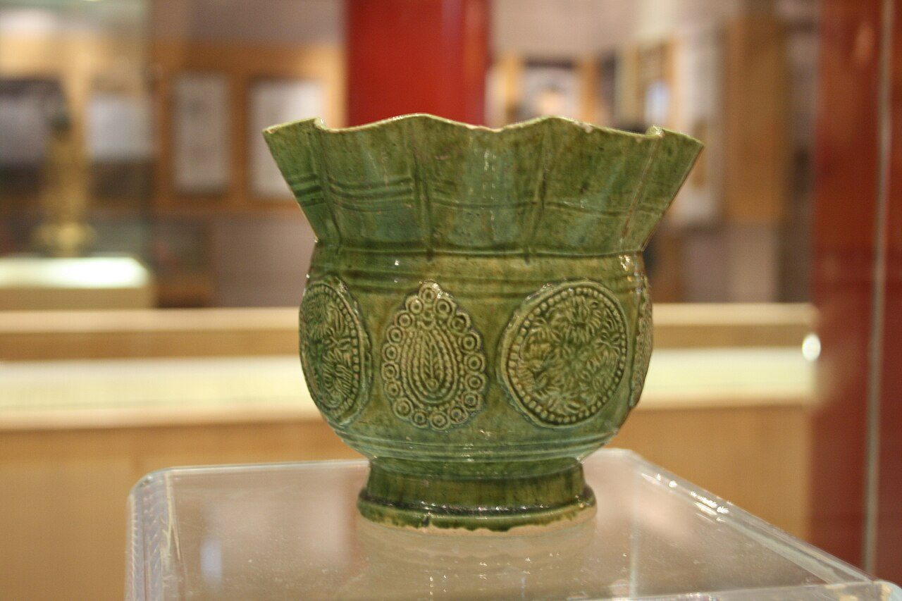
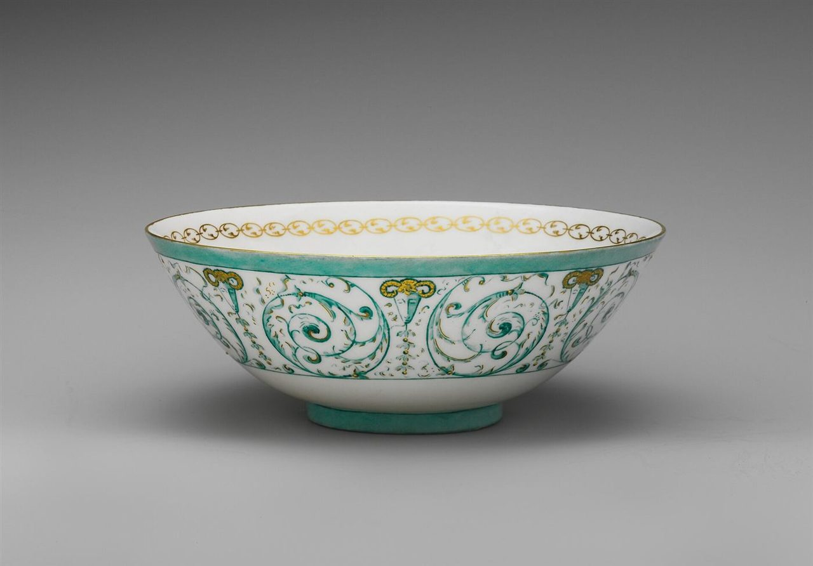
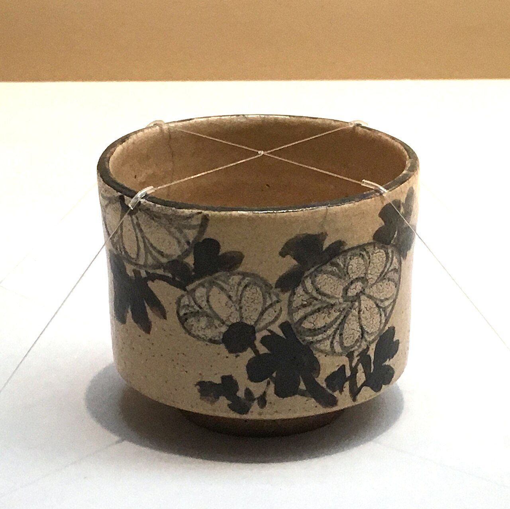
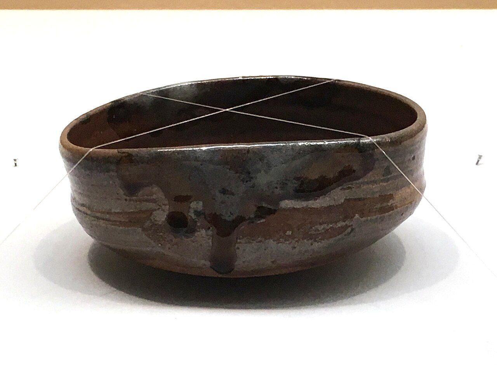
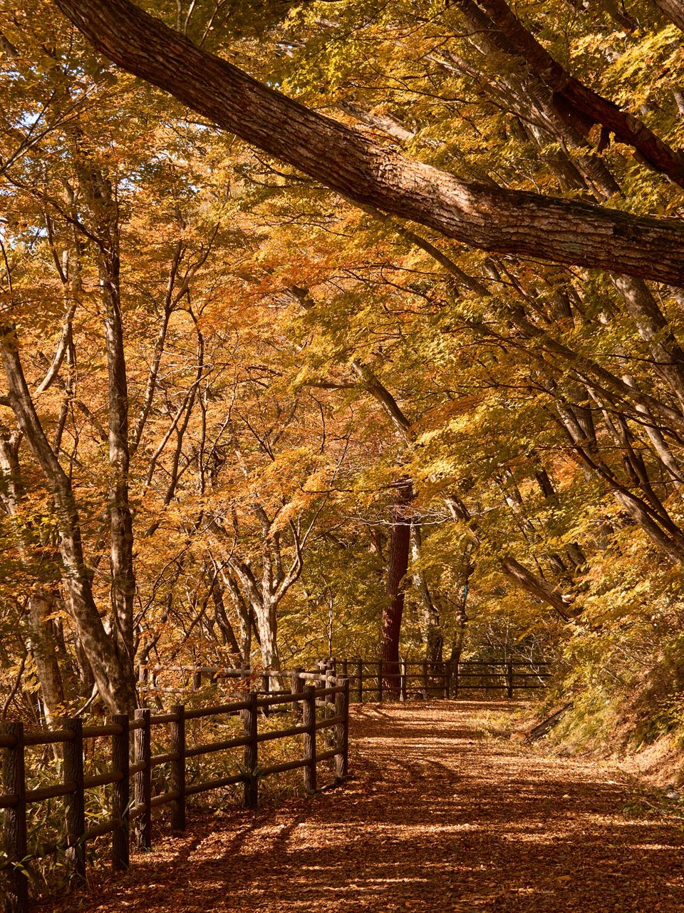

らくぅーあ

 イメージ写真
イメージ写真
屋号のひびき
「らくぅーあ」と声に出すと
語尾がふわっとのびる、やわらかな響きの名前です。ふっと肩の力が抜けるような、くつろいだ時間を思い浮かべるページにしました。
※名前から受けた制作側の印象です。お店の由来や考えとは関係ありません。
ご案内の状況
お店の情報は、順次ご案内します
下記は現在確認中のため「準備中」としています。詳しくはお電話またはInstagramでお問い合わせください。
- 営業時間店舗にご確認ください準備中
- 定休日店舗にご確認ください準備中
- 施術メニューメニューのページもご覧ください準備中
- 料金店舗にご確認ください準備中
- ご予約方法お電話またはInstagramから準備中
器の棚
やきもののまち、というイメージで
笠間は焼き物と栗で知られるまちです。ここに並ぶ器の写真は、その雰囲気を伝えるためのフリー素材で、笠間焼ではありません。左右に動かしてご覧ください。

緑の釉とろりと光る深い緑
白と青緑すっきり澄んだ色あい
土のぬくもり手になじむ素朴なかたち
飴色の流れ釉薬が流れた景色

ひと息ぶんの、ゆっくりを。※ページの雰囲気を伝えるための言葉で、お店の理念ではありません。／イメージ写真
ご来店情報
場所とお問い合わせ
- 住所
- 〒309-1717
茨城県笠間市旭町314-1 レオパレスロゼ102 - 電話
- 050-8887-2702
- 営業時間
- 準備中(店舗にご確認ください)
- @laqooa_kasama